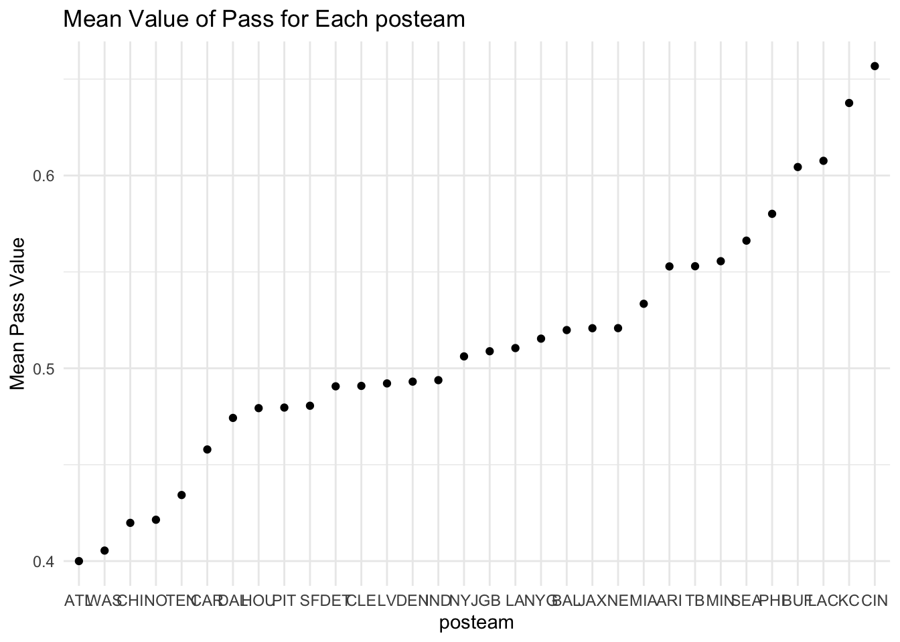
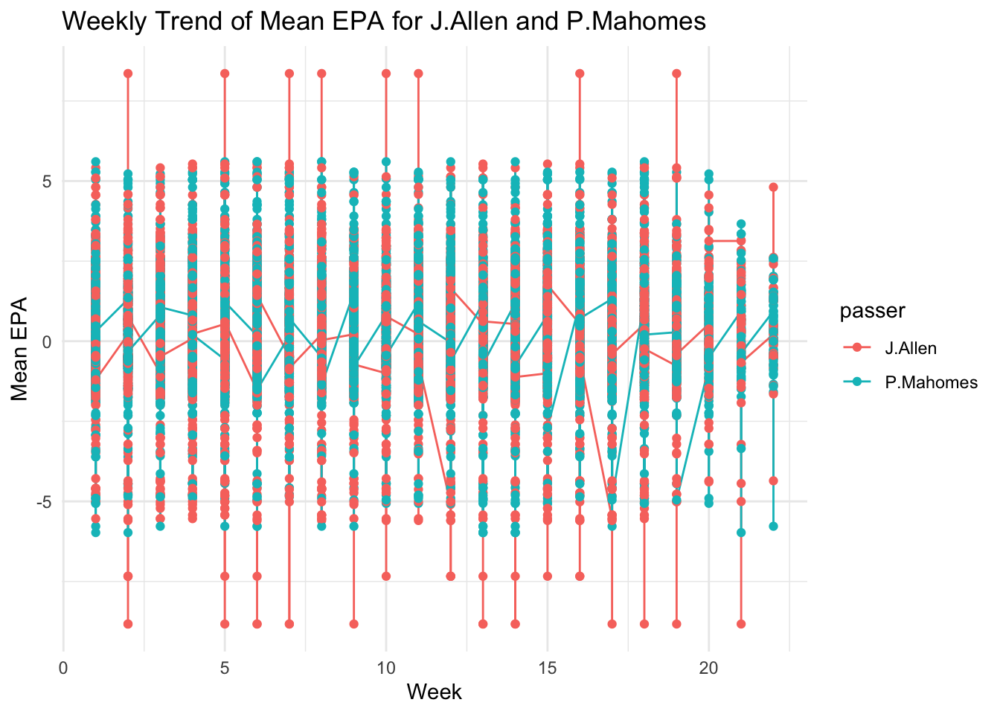

play_id: Numeric play identifier that when used with game_id and drive provides the unique identifier for a single play game_id: Ten digit identifier for NFL game. drive: Numeric drive number in the game. week: Season week. posteam: String abbreviation for the team with possession. qtr: Quarter of the game (5 is overtime). half_seconds_remaining: Numeric seconds remaining in the half. down: The down for the given play. Basically you get four attempts (aka downs) to move the ball 10 yards (by either running with it or passing it). If you make 10 yards then you get another set of four downs. pass: Binary indicator if the play was a pass play. wp: Estimated winning probability for the posteam given the current situation at the start of the given play.
Q2b.
Summarize the mean value of pass for each posteam when all the following conditions hold: wp is greater than 20% and less than 75%; down is less than or equal to 2; and half_seconds_remaining is greater than 120.
# A tibble: 32 × 2
posteam mean_pass
<chr> <dbl>
1 ARI 0.553
2 ATL 0.4
3 BAL 0.520
4 BUF 0.604
5 CAR 0.458
6 CHI 0.420
7 CIN 0.657
8 CLE 0.491
9 DAL 0.474
10 DEN 0.493
# ℹ 22 more rows
Q2c.
Provide both (1) a ggplot code with geom_point() using the resulting data.frame in Q2b and (2) a simple comments to describe the mean value of pass for each posteam. In the ggplot, reorder the posteam categories based on the mean value of pass in ascending or in descending order.
library(ggplot2)summary_data <- summary_data[order(summary_data$mean_pass), ]ggplot(summary_data, aes(x =reorder(posteam, mean_pass), y = mean_pass)) +geom_point() +labs(title ="Mean Value of Pass for Each posteam",x ="posteam",y ="Mean Pass Value") +theme_minimal()

Q2d. Consider the following data.frame, NFL2022_epa:
Rows: 46427 Columns: 7
── Column specification ────────────────────────────────────────────────────────
Delimiter: ","
chr (4): game_id, posteam, receiver, passer
dbl (3): play_id, drive, epa
ℹ Use `spec()` to retrieve the full column specification for this data.
ℹ Specify the column types or set `show_col_types = FALSE` to quiet this message.
Variable description for NFL2022_epa
play_id: Numeric play identifier that when used with game_id and drive provides the unique identifier for a single play game_id: Ten digit identifier for NFL game. drive: Numeric drive number in the game. posteam: String abbreviation for the team with possession. passer: Name of the player who passed a ball to a receiver by initially taking a three-step drop and backpedaling into the pocket to make a pass. (Mostly, they are quarterbacks) receiver: Name of the receiver. epa: Expected points added (EPA) by the posteam for the given play. Create the data.frame, NFL2022_stuffs_EPA, that includes
All the variables in the data.frame, NFL2022_stuffs; The variables, passer, receiver, and epa, from the data.frame, NFL2022_epa. by joining the two data.frames. In the resulting data.frame, NFL2022_stuffs_EPA, remove observations with NA in passer.
library(dplyr)NFL2022_stuffs_EPA <-left_join(NFL2022_stuffs, NFL2022_epa %>%select(play_id, passer, receiver, epa), by ="play_id")
Warning in left_join(NFL2022_stuffs, NFL2022_epa %>% select(play_id, passer, : Detected an unexpected many-to-many relationship between `x` and `y`.
ℹ Row 2 of `x` matches multiple rows in `y`.
ℹ Row 24 of `y` matches multiple rows in `x`.
ℹ If a many-to-many relationship is expected, set `relationship =
"many-to-many"` to silence this warning.
Provide both (1) a single ggplot and (2) a simple comment to describe the NFL weekly trend of weekly mean value of epa for each of the following two passers, “J.Allen” “P.Mahomes”
library(ggplot2)filtered_data <- NFL2022_stuffs_EPA %>%filter(passer %in%c("J.Allen", "P.Mahomes"))ggplot(filtered_data, aes(x = week, y = epa, group = passer, color = passer)) +geom_line() +geom_point() +labs(title ="Weekly Trend of Mean EPA for J.Allen and P.Mahomes",x ="Week",y ="Mean EPA") +theme_minimal()

Calculate the difference between the mean value of epa for “J.Allen” the mean value of epa for “P.Mahomes” for each value of week.
Summarize the resulting data.frame in Q2d, with the following four variables:
posteam: String abbreviation for the team with possession. passer: Name of the player who passed a ball to a receiver by initially taking a three-step drop, and backpedaling into the pocket to make a pass. (Mostly, they are quarterbacks.) mean_epa: Mean value of epa in 2022 for each passer n_pass: Number of observations for each passer Then find the top 10 NFL passers in 2022 in terms of the mean value of epa, conditioning that n_pass must be greater than or equal to the third quantile level of n_pass.